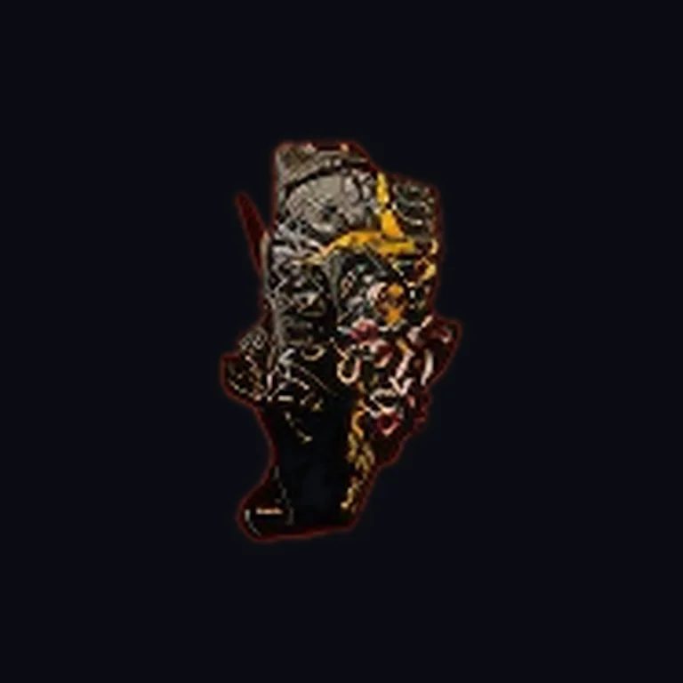
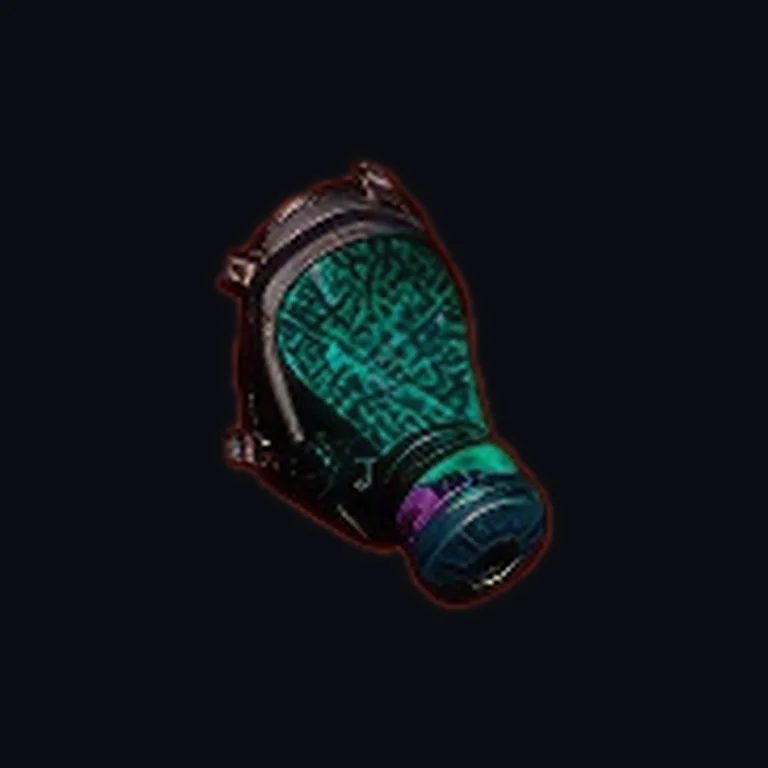
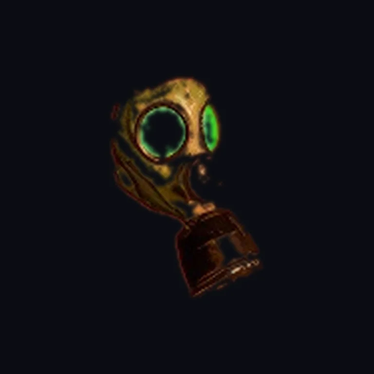
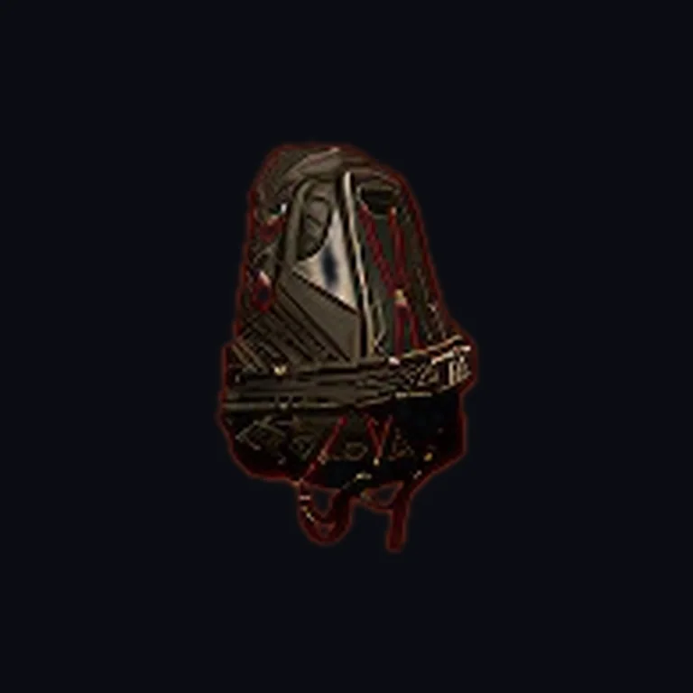
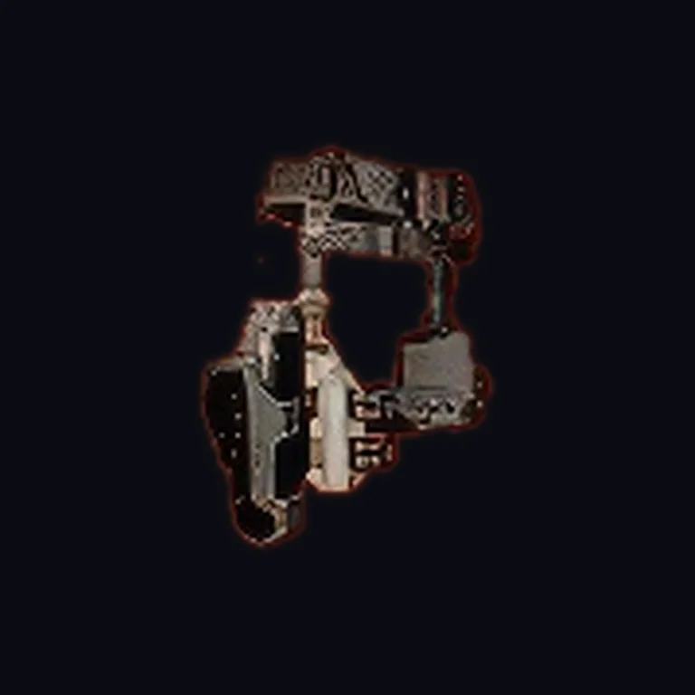

Peças para conforto e progressão
Algumas exóticas brilham em builds solo, oferecendo sustain, versatilidade e margem maior para erro.
Este catálogo reúne os principais equipamentos exóticos de The Division 2 em um formato visual direto e organizado. Aqui você encontra uma visão rápida do talento de cada peça, do tipo de build em que ela funciona melhor e do papel que ela cumpre no endgame.
Algumas exóticas brilham em builds solo, oferecendo sustain, versatilidade e margem maior para erro.
Outras exóticas se destacam quando o foco é aumentar dano, suporte ou eficiência em grupo organizado.
Equipamento exótico não é só bônus bruto: ele muda a forma como a build funciona na prática.
Uma visão rápida das peças exóticas mais relevantes do portal, com foco em talento, função e melhor contexto de uso.

Mochila exótica extremamente versátil, ótima para builds solo, híbridas e setups agressivos com sustain.
Acumula bônus progressivos ao pegar troféus, fortalecendo dano, armadura e eficiência geral da build.

Uma das máscaras exóticas mais valiosas do jogo, muito forte para grupo e excelente em builds críticas.
Entrega bônus ofensivos de acordo com a distância do combate, ajudando bastante setups DPS e comps em grupo.

Máscara exótica voltada para conforto e sustentação, ideal para builds que precisam aguentar mais pressão.
Favorece recuperação e estabilidade em combate, sendo uma boa escolha para jogadores que priorizam segurança.

Mochila exótica focada em combinações híbridas e builds experimentais com múltiplos bônus de set.
Expande interações com sets e abre espaço para composições menos rígidas e mais criativas.

Peça exótica muito conhecida em builds de skill, com foco em aumentar o dano das habilidades.
Amplifica o dano de habilidades e encaixa muito bem em setups de turret, drone e skill DPS.
Luvas exóticas muito valiosas em setups de suporte e habilidade, especialmente em composições coordenadas.
Favorecem controle e reaproveitamento de habilidades, ajudando bastante builds healer e de suporte técnico.
Esta leitura rápida ajuda a escolher a peça exótica certa de acordo com o seu estilo de jogo.
Com a vitrine principal em exoticas.html, o catálogo de armas exóticas e esta nova área de equipamentos exóticos, o portal fica mais organizado para consulta, builds e expansão futura.